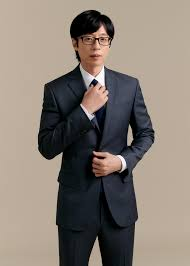

 |
|
|---|---|
| Korea Name | Yoo Jae-suk |
| Born | 14 August 1972 |
| Nationality | South-Korea |
| Education | Seoul Institute of the Arts |
| Occupation/th> | Television host, Comedian, Entertainer (Know as Nation's MC |
| Years active | 1991-present |
| Height | 178cm (5'10") |
| Spouse(s) | Na Kyung-eun |
| Children | 2 |
Born on 14 August 1972 in Suyu-dong, Gangbuk District, Seoul, South Korea, Yoo is the eldest of three siblings. In 1991, he completed his high school education and graduated from the Yongmoon High School in Seoul. In the same year, Yoo entered the acting department of Seoul Institute of the Arts.
Yoo's television debut was on the KBS Comedian Festival (for college students) in 1991, where he performed a parody of a commercial with Choi Seung-gyung. His dancing to a cover of the song "Step by Step" by New Kids on the Block was another early memorable moment. In 2002, after nine years as a relatively unknown comedian, thanks to a recommendation by Choi Jin-sil, he hosted the program Live and Enjoy Together. He then rose to prominence when he co-hosted a program called The Crash of MCs with Kang Ho-dong, Lee Hwi-jae, and Kim Han-seok.
His first Grand Prize award was for the talk show Happy Together Friends.
| Year | Titile | Role | Notes |
|---|---|---|---|
| 1989 | Young-gu and Daengchili | - | Cameo |
| 1994 | Tyranno's Toenail | - | - |
| 2007-2008 | Kimchi Cheese Smile | - | Cameo |
| 2008 | Bee Moive | Barry B.Benson (Korean version) | - |
| 2009 | White Tuft, the Little Beaver | Narrator & Owl (Korean version) | - |
| 2020 | P1H: The Beginning of a New World | Han | Special Appearance |
| 2024 | Pilot | Himself | Special Appearance |